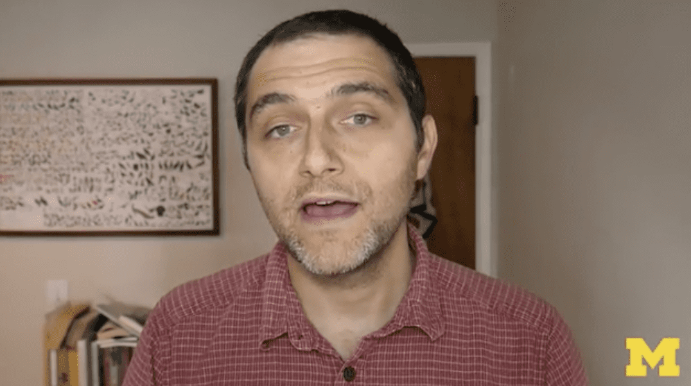

What I learned from teaching online.
Or: How I learned to stop worrying and just plan my teaching and writing.

Repost of a post I put up on the Statistical Modeling, Causal Inference, and Social Science blog
https://statmodeling.stat.columbia.edu/2022/01/06/what-i-learned-from-teaching-online/
Citation
BibTeX citation:
@online{zelner2022,
author = {Jon Zelner},
title = {What {I} Learned from Teaching Online.},
date = {2022-01-06},
url = {https://zelnotes.io/posts/backwards-design},
langid = {en}
}
For attribution, please cite this work as:
Jon Zelner. 2022. “What I Learned from Teaching Online.”
January 6, 2022. https://zelnotes.io/posts/backwards-design.